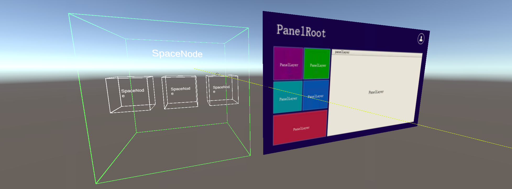

元素（Element）
所有节点和组件都有一个统一的名称叫元素，引入元素是为了在EMR中对所有节点和组件都有统一的操作。元素与节点的区别是节点提供了操作的更多细节而元素只是一个接口，每个节点或组件都实现了Element接口，接口抽取了所有节点和组件的公共部分。


在上图中不管是SpaceNode节点、PanelRoot节点还是PanelLayer节点它们都是元素并且这些节点都统一继承了Element接口。
- 元素的常用属性
| 名称 | 数据类型 | 说明 |
| parentElement | Element | 获取当前元素的父元素（如果不存在则结果为 null） |
| previousElement | Element | 获取当前元素的前一个兄弟元素（如果不存在则结果为 null） |
| nextElement | Element | 获取当前元素的下一下兄弟元素（如果不存在则结果为 null） |
| firstChildElement | Element | 获取第一个直接子元素（如果不存在则结果为 null） |
| lastChildElement | Element | 获取最后一个直接子元素（如果不存在则结果为 null） |
| childElements | Element | 获取直接子元素列表（如果不存在则结果为 为一个空列表） |